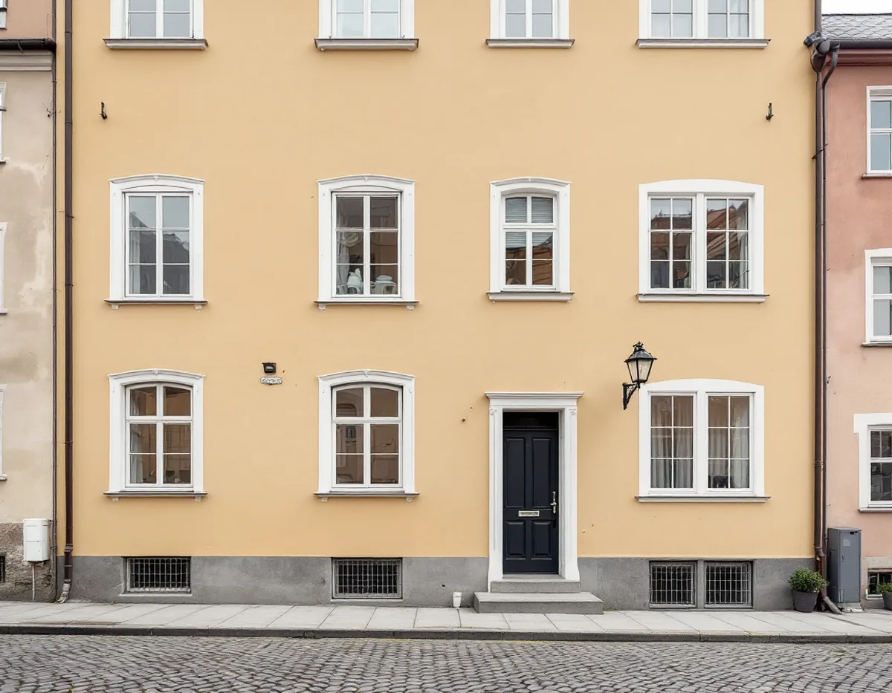
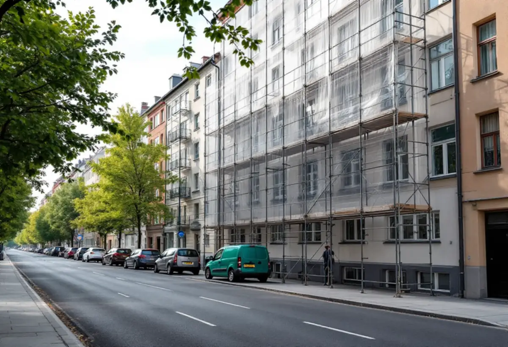
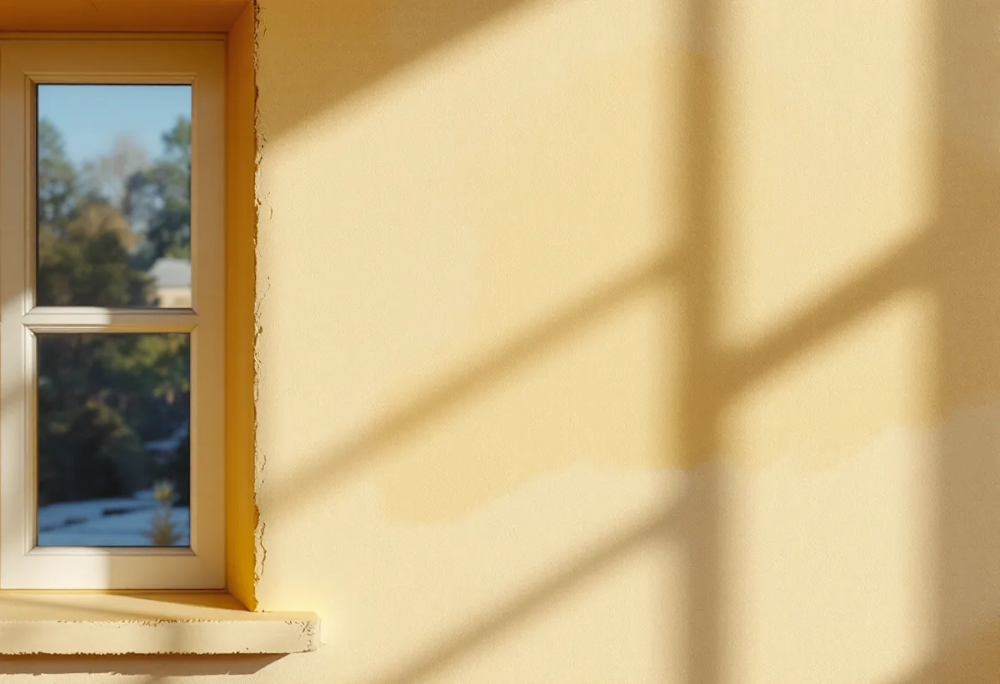

Platsbesök
Fasaderna, putsen och färgtypen går vi igenom med styrelsen.
På Södermalm är det i regel en bostadsrättsförening eller en fastighetsägare som beställer fasadmålningen, och en ny kulör på gatufasaden kräver bygglov. Geal Entreprenad AB målar fasader på flerbostadshus på Södermalm och tar fram underlaget som föreningen och bygglovet behöver.

Enligt stadens områdesfakta för 2025 finns 43 542 bostadsrätter i flerbostadshus i Södermalms stadsdelsområde, medan småhusen med äganderätt bara är 13. Den som beställer en fasadmålning är därför i regel en bostadsrättsförening, en hyresvärd eller allmännyttan.
I en bostadsrättsförening är fasaden en gemensam del av huset. Enligt bostadsrättslagen ska en förenings ekonomiska plan numera innehålla en teknisk underhållsplan som visar fastighetens underhållsbehov de kommande 50 åren, och en fasadmålning är en av de poster som brukar planeras långt i förväg.

För byggnader som inte är en- eller tvåbostadshus krävs bygglov inom detaljplan för fasadändring på en fasad eller ett tak som vetter mot allmän plats, alltså mot gata, torg eller park. Boverket förklarar att det räcker att en del av fasaden vetter mot allmän plats för att lov ska krävas för hela den fasaden, och att det bara är den fasaden som prövas.
En ny kulör är en fasadändring, medan ommålning i samma kulör normalt räknas som underhåll. Gårdsfasaden kan alltså ofta målas om i ny kulör utan lov, om huset inte är klassat och detaljplanen inte säger något annat. Ett byte av färgtyp är enligt Boverket inget kulörbyte, men kan bedömas påverka byggnadens yttre karaktärsdrag.
Stockholms stad hänvisar till Stadsmuseets klassificeringskarta. Är byggnaden markerad med blått eller grönt, eller ligger den inom ett riksintresse eller ett särskilt kulturhistoriskt värdefullt område, behöver du bygglov även för åtgärder som annars är lovfria – då gäller det också gårdsfasaden.
Staden påpekar att en antikvarisk förundersökning kan behövas inför arbeten på särskilt värdefulla byggnader, och att det kan krävas en certifierad sakkunnig inom kulturvärden. Vi tar reda på klassningen innan kulören föreslås. Om fasadmaterial och puts på Södermalm kan du läsa under fasadrenovering på Södermalm.
Riksantikvarieämbetet beskriver kalkfärg som den färg som i århundraden använts på puts, med en levande, något flammig yta. Vid mitten av 1900-talet gick man alltmer över till kalkcementbruk och andra färger. Kalkfärg släpper igenom fukt, har god vidhäftning på kalkputs men dålig på cementrika underlag, och används i dag främst vid ommålning av fasader som redan är kalkavfärgade och på ny kalkputs på kulturhistoriskt värdefulla hus.
Utomhus målas kalkfärg från senvåren till eftersommaren och i god tid före frost, ett skikt per dag och i 3–7 strykningar. En fasadyta får inte avbrytas mitt i, bara vid hörn eller andra naturliga gränser, och fönsterglas ska skyddas eftersom kalken etsar glas. Därför planeras ställning, väderskydd och arbetslag för hela fasaden på en gång. Kulört kalkfärg bör enligt Riksantikvarieämbetet blandas vid ett och samma tillfälle för hela ytan, eftersom kulören annars lätt avviker.
Innan färgtypen väljs tar vi reda på vad fasaden är målad med i dag och vilket bruk den är putsad med. En lagning med cementhaltig puts i en kalkputsfasad ska enligt Riksantikvarieämbetet tas bort och putsas om med kalkputs innan fasaden kalkas.
Föreningen får ett skriftligt underlag med fasadernas skick, färgtyp, förslag på kulör och vilka fasader som kräver lov. Om måleri på Södermalm i övrigt kan du läsa under målare på Södermalm.

Fasaderna, putsen och färgtypen går vi igenom med styrelsen.
Stadsmuseets karta och detaljplanen kontrolleras, gata och gård för sig.
Varje fasad, ställning och väderskydd står för sig.
Ansökan med kulörförslag tas fram när kulören ändras mot gatan.
Putslagning och strykning i rätt färgtyp, fasadyta för fasadyta.
Vi går igenom resultatet med styrelsen och lämnar dokumentationen.
Skatteverket ger rotavdrag i en bostadsrätt bara för arbete inne i bostaden som bostadsrättshavaren ansvarar för enligt stadgarna. Arbete på gemensamma ytor, till exempel tak, fasader, trapphus och entréer, ger inget rotavdrag.
En fasadmålning på ett föreningshus betalas därför av föreningen utan avdrag, och kostnadsförslaget ställs till föreningen.
Fasadernas yta och höjd, putsens skick, färgtyp, ställning och väderskydd mot gatan och om bygglov behövs. Efter ett gratis platsbesök får föreningen ett skriftligt kostnadsförslag.
Fasad, fönster och invändig målning.
Målare i Stockholm →Takbyte, takbesiktning och plåtarbeten.
Takläggare på Södermalm →Stenstad, storgårdskvarter och bergen.
Takrenovering på Södermalm →Vattenskador, ansvar och husens olika åldrar.
Badrumsrenovering på Södermalm →Inreda vinden till bostäder.
Byggföretag på Södermalm →Kalkputs, kalkfärg och plåt på lister.
Fasadrenovering på Södermalm →Föreningar, gatufasad och gårdsfasad.
Fönsterbyte på Södermalm →Föreningens fönster, besiktigade före beslut.
Fönsterrenovering på Södermalm →Renovera, riva och sortera golvet.
Golvläggare på Södermalm →Slipa golven i den nyköpta lägenheten.
Golvslipning på Södermalm →Kokvrå, gasspis och kulturvärden i lägenheten.
Köksrenovering på Södermalm →Äldre färglager, bättring och provytor.
Målare på Södermalm →Takkupor, vindar och äldre tak.
Plåtslagare på Södermalm →Väggar, dörrar och förvaring i lägenhet.
Snickare på Södermalm →Nytt tak på föreningens eller hyresvärdens hus.
Takbyte på Södermalm →Ny tapet och gamla tapetlager.
Tapetsering på Södermalm →Lägenheten i takt med stambytet.
Totalrenovering på Södermalm →